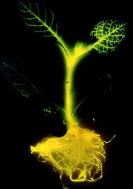
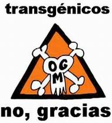

|
|
Frutos del árbol de la ciencia
Alimentos transgénicos
La historia ésta es muy reciente y el asunto enigmático y apasionante como para no ceder a la tentación de opinar. El resultado es que la desinformación se abre paso entre las multitudes generando un clima propicio para el estropicio. En momentos así lo mejor es ir por partes y empezar por el principio.
Resulta que todos los organismos vivientes, bacterias, plantas , animales y cualquier otro bicho, poseen –en todas y en cada una de sus células– unas moléculas extraordinariamente largas, compuestas como cadenas de millones y millones de eslabones, llamadas ácido desoxirribo nucleico (ADN) que contienen toda la información necesaria para la vida del organismo. Son nada más y nada menos que el conjunto de instrucciones que cada uno tiene para poder fabricar correctamente el propio cuerpo con todas sus partes y funciones. A la totalidad de moléculas de ADN que hay en cada célula se la llama genoma.
Lo dicho implica que existen mecanismos absolutamente materiales por los cuales la información, las instrucciones, pueden estar escritas y ser leídas para que las células hagan lo que deben hacer y no cualquier otra cosa. Estos mecanismos fueron completamente dilucidados en los últimos 50 años por un grupo de científicos de variadas disciplinas que genéricamente llamamos biólogos moleculares. Nos cuentan que el ADN está formado por unas interminables cadenas de fosfatos y azúcares. Los eslabones de estas cadenas funcionan como letras, para poder contener información. El genoma humano, por ejemplo, tiene 3 mil millones de letras, que acaba de ser leído completamente por una institución internacional denominada Proyecto Genoma Humano. Pero lo que a nosotros nos interesa es que esta información está escrita en páginas independientes de unas quinientas o mil letras, más o menos. Y cada página independiente se llama gen. Y cada página independiente –cada gen– instruye la fabricación –la síntesis– de una proteína.
Momento, tendríamos que explicar qué es una proteína. Las proteínas son las moléculas principales, primordiales (de ahí deriva su nombre), de las que está hecho nuestro cuerpo y el de todos los organismos, el material, los ladrillos básicos. Piel, músculo, pelo, uña, todo está hecho de proteínas. Hay proteínas que tienen función digamos estructural, ser ladrillo, formar una pared, y proteínas que tienen una función, digamos, operativa (a éstas también se las llama enzimas), ensamblar ladrillos para construir una pared. Pero todas son proteínas. En nuestro cuerpo, por ejemplo, puede haber unos 30 mil tipos diferentes de proteínas. O sea que en nuestro genoma debe haber unos 30 mil genes.
Las instrucciones no sólo se respetan, también se heredan. Todas las células de la planta del tomate “saben” cómo fabricar un frutito rojo y sabrososo lleno de juguito y semillas. Y de vez en cuando lo fabrican. Las semillas también son –o fueron– células de la misma planta, por lo tanto también “saben” lo mismo que sus compañeras. Y a su vez generarán una nueva planta con las mismas características y saberes. Salvando las distancias lo mismo hacemos los animales y el resto de los organismos vivientes. Las instrucciones pasan de generación en generación. La materia pasa, las instrucciones quedan. |
| |
¿Son nuevos los vegetales modificados genéticamente?
Todos los organismos vivientes en la Tierra son el producto del barajado fortuito y caótico de genes. Nosotros mismos estamos hechos de un bricolage genético cuyas huellas de corte y empalme permanecen imborrables en nuestro genoma. El tránsito de genes entre las especies es una realidad ajena a nuestra voluntad que comenzó con la vida hace 4 mil millones de años.
El hombre lleva varios miles de años modificando genéticamente plantas y animales en beneficio propio. La práctica de seleccionar artificialmente individuos de una prole con una característica determinada que se desea potenciar, e iniciar un linaje, termina generando variedades, luego razas, por último especies diferentes de la original. Toda especie domesticada por el hombre sufrió modificaciones genéticas.
La ingeniería genética permite ahora realizar en corto tiempo y en forma controlada lo que antes costaba décadas o siglos, y conseguir efectos que antes eran impensables con el método de cruce y selección.
|
|
| |
 |
| |
|  |
|
Ingeniería genética
Entre otras cosas para dilucidar el secreto de la herencia la biología molecular desarrolló técnicas que permiten manipular el ADN. Cortarlo, pegarlo, ensamblarlo, copiarlo, trasladarlo, leerlo, fabricarlo… Decirlo es fácil, pero no nos olvidemos de que estamos hablando de moléculas, es decir de cosas tan pero tan minúsculas que son invisibles hasta con el más poderoso de los microscopios. Bien, al conjunto de estas técnicas se lo llama ingeniería genética y es realmente cosa e’ mandinga.
Y aquí llegan los alimentos transgénicos. Resulta que los biólogos moleculares descubrieron que pueden injertar el gen de un individuo de una especie en el genoma de un individuo de otra especie. Este segundo individuo es un transgénico. Y no sólo eso: lograron hacer que los genes injertados se expresaran, es decir que el individuo injertado produzca la proteína correspondiente al gen extraño. Después de jugar un rato largo con virus y bacterias empezaron a probar con plantas y animales. Uno de los experimentos más espectaculares se realizó en 1986 cuando un grupo de investigadores injertó el gen de luciferasa, la proteína que emite luz en las luciérnagas, en una planta de tabaco. Cuando la planta se regaba con una solución que contenía luciferina, el sustrato natural de la luciferasa, la planta se iluminaba cual arbolito de navidad. Esa fue la primera plantita transgénica. Poco tiempo antes había aparecido un ratoncito con un gen de rata injertado. Era el gen que fabricaba la hormona de crecimiento de rata. Este mickey cibernético medía el doble que sus hermanitos no transgénicos de la misma camada. Prácticamente superada la fase experimental muchos laboratorios se lanzaron a la búsqueda de transgénicos útiles –y comercializables–, y ahí aparecieron los alimentos transgénicos.
En definitiva los alimentos transgénicos son organismos, o partes de organismos, o derivados de organismos que entre sus miles de genes, posee uno insertado, o uno modificado, por el hombre. Pero para qué queremos alimentos transgénicos.
Alimentación a gran escala
Somos 6 mil millones. Y a los 6 mil nos gusta comer y llenarlos la panza de manjares. Y en 20 años seremos 12 mil millones de personas pisándonos los juanetes en el planeta. No hay que ser muy vivo para darse cuenta que estamos frente a un problema serio: la superficie cultivable de la Tierra no crece con el ritmo de la demografía. Más aún, la superficie cultivable no crece. Y aún más, la superficie cultivable decrece. Es cierto que se suman otros problemas junto a éste como el de la distribución de la riqueza y la geopolítica. Pero los números cantan. Los alimentos transgénicos están entre nosotros porque representan un recurso comercialmente competitivo en el negocio de la alimentación.
Actualmente se comercializan o están en vías de comercialización vegetales modificados para conferirle a la planta alguna ventaja redituable. Por ejemplo que tengan una vida comercial más larga. O para que resistan condiciones ambientales agresivas, como heladas, sequías o suelos salinos. O para resistir herbicidas, o plagas de insectos. O para resistir enfermedades. O para poseer mejores cualidades nutritivas.
Analicemos algunos ejemplos con más detalle. Los cultivos deben competir por la luz, el agua y los nutrientes de la tierra, con las malas hierbas. Esta lucha puede reducir el rendimiento potencial de una plantación en un 70%. Las malas hierbas degradan significativamente el valor de la cosecha y sirven de refugio para las plagas. Habitualmente los productores contrarrestan este perjuicio con la aplicación de herbicidas. Pero debido a que cada herbicida tiene un espectro reducido de acción se hace necesario la aplicación de varios productos químicos diferentes durante toda la época de crecimiento del cultivo. Las empresas biotecnológicas Monsanto y Calgene desarrollaron plantas tolerantes a un único herbicida de amplio espectro, el glifosato, que es inocuo al medio ambiente y a los animales y que se degrada rápidamente en el medio produciendo compuestos naturales inocuos. El gen de la resistencia al glifosato fue aislado en bacterias e introducido en plantas de soja, tomate, colza, algodón y algunas otras.
Las plagas de insectos diezman cosechas. Jardineros y agricultores hicieron favorito el insecticida basado en una proteína producida por la bacteria Bacillus thuringiensis (Bt). Estas proteínas se anclan en sitios específicos de las células epiteliales del intestino de las larvas de los insectos, inhibiendo la absorción de alimentos lo que conduce a la muerte del insecto. La eficacia del insecticida queda limitada por las lluvias. Pero los expertos de Monsanto, nuevamente, lograron injertar el gen Bt en una cepa de algodón, que demostró resistir plagas como las de orugas y gusanos. El gen Bt no es uno sólo sino una familia cuyos integrantes poseen diferente especificidad para diferentes insectos, lo cual permite que cada plantación dirija su artillería transgénica sólo contra los insectos que representan plaga para ese cultivo. Las proteínas Bt, como todas las proteínas, se degradan en el tubo digestivo de los mamíferos o en el suelo, o en cualquier parte y por lo tanto no representan ningún peligro ambiental, en contraste con los insecticidas comunes que a los insectos “los matan bien muertos”.
A veces las plantas se enferman, y los contagios masivos suelen arruinar plantaciones. A veces no se pierde una cosecha sino varias sucesivas. Los agentes de la enfermedad –generalmente virus– son muy difíciles de erradicar. Uno de los logros más espectaculares de la ingeniería genética fue la producción de plantas resistentes a virus. Tomates, tabacos y otras plantas fueron modificadas genéticamente para que expresaran una proteína viral, la proteína de la cápside del virus del mosaico del tabaco (los virus vienen envueltos en una cápsula proteica). Estas plantas resultaron resistentes a una decena de enfermedades virales.
Las frutas (y cualquier vegetal, pero sobre todo las frutas) se pasan. El verdulero de la esquina sabe que si no vende rápido ese cajón de tomates empiezan a ponerse muy blanditos y arrugados y la gente no los va a querer llevar y va a tener que comérselos él o tirarlos. Resulta que la maduración está controlada por genes que –lógicamente– producen proteínas que manejan los tiempos del fruto, se llaman proteínas de senescencia. Una vez localizados los genes, puede intentarse algo con ellos. En este caso colocaron un gen extraño pero realmente extraño. El inserto, llamado gen antisentido, no produce una proteína sino que lo que hace es regular la expresión de los genes autóctonos de la planta. Impide que los genes originales puedan fabricar sus proteínas. Y así el tomate Flavr Svr (marca registrada) no se pasa y dura más tiempo en la góndola. Tomate redondo, negocio redondo.
Los ejemplos mencionados representan ventajas para los productores, ya que disminuyen costos y riesgos o aumentan el valor del producto. Aparentemente, hasta aquí, el consumidor no recibe ningún beneficio. Pero hay que considerar un beneficio indirecto para el consumidor y el medio ambiente consistente en la drástica disminución de agroquímicos en la cadena alimentaria. |
| |
Biodiversidad
La conservación de la biodiversidad en nuestro planeta es un valor supremo. Su principal enemigo es la agricultura. Cuando se tala un bosque nativo para plantar trigo o maíz, cuando se desmonta el campo silvestre para sembrar soja o girasol, miles de especies vegetales, animales y bacterianas desaparecen, y algunas de ellas para siempre. Y son reemplazadas por la monótona uniformidad del cultivo agrícola. Una lamentable merma de la biodiversidad se produce cada vez que aumenta la superficie de cultivo. De todos modos, también queremos comer. Y encima no nos gusta que nos digan cuántos hijos debemos parir. Por lo tanto hay que sacrificar ciertas tierras, dedicándolas a la agricultura, y conservar la biodiversidad en otras, preservadas en su estado natural. Cuanto más eficiente sea la agricultura, más alimentos podrá producir por hectárea cultivada y tanta mayor superficie natural permitirá conservar. En la medida en que ciertos cultivos transgénicos incrementan el rendimiento agrícola, tanto mejor para la naturaleza. |
|
| |
 |
| |
Argentina transgénica
A finales del año 2005 existían en todo el mundo un total de 90,0 millones de hectáreas cultivadas con plantas transgénicas. La progresión de los cultivos fue explosiva, ya que en 1996 sólo se habían cultivado 1,7 millones de hectáreas. De los 90,0 millones 17,4 millones, el 20%, en Argentina. De modo que Argentina es el segundo productor mundial de alimentos transgénicos (el primero es Estados Unidos). El principal producto es la soja transgénica, pero también se produce maíz, algodón y algunas hortalizas. Casi todo lo producido se exporta lo cual significa un importante aporte a la balanza comercial.
No sólo se cultiva en la Argentina, también se investiga en el desarrollo de nuevas especies y ya se han cosechado importantes logros que fueron protegidos con varias patentes. Tanto en el Instituto de Investigaciones en Ingeniería Genética (INGEBI) dependiente de la Facultad de Ciencias Exactas y Naturales de la UBA, como en el Instituto de Biología Molecular del INTA de Castelar se trabaja en diferentes proyectos para desarrollar plantas transgénicas de papa, algodón y girasol. |
|
| |
 |
| |
|  |
|
Ecologistas, al ataque
En todo el mundo, pero principalmente en Europa, grupos ecologistas han emprendido acciones en contra de los alimentos transgénicos. En el parlamento europeo “Los Verdes” lograron un moratoria que impedía la producción y comercialización de nuevos alimentos derivados de organismos manipulados genéticamente (OMG). El principal reclamo es la falta de un etiquetado que identifique a los transgénicos. El problema no es sencillo. Los defensores de los alimentos derivados de OMG se oponen en general a un etiquetado de este tipo porque, dicen, no siempre es posible, muchas veces es absurdo, e infiriendo –generalmente– que a igual precio el consumidor va a preferir no innovar y continuar su dieta tradicional desechando el nuevo producto. Aunque no siempre.
En el caso del tomate que suelen etiquetarse uno por uno, la compañía productora de Flavr Svr ganó en Estados Unidos el juicio contra los que querían obligarlos al etiquetado individual. Pero después de esto decidieron libremente etiquetarlos ya que consideraban (con razón) que su superior calidad debía quedar evidente para los consumidores.
En el caso de la soja no es tan fácil el etiquetado. Las cadenas productoras de alimentos juntan a granel granos provenientes de diferentes campos imposibles de individualizar. Pero además, el principal uso de la soja consiste en la producción de aceite y lecitina. Ninguno de estos dos productos contienen ADN ni proteínas. Son química y físicamente indistinguibles del aceite y la lecitina de la soja no transgénica. Poseen las mismas propiedades nutricionales y toxicológicas. Son idénticos molécula por molécula, átomo por átomo.
Hay quien dice que las objeciones europeas se debían más un una política proteccionista de los propios cultivos frente a un relativo retraso tecnológico respecto a Estados Unidos. Lo cierto es que el 14 de febrero del 2001 el parlamento europeo estableció una nueva norma que implica el fin de la moratoria en una votación en la que los eurodiputados ecologistas no se opusieron.
|
| |
Frutos prohibidos del árbol de la ciencia
Cuando Benjamín Franklin inventó el pararrayos muchos se opusieron al macabro invento que esquivaba antinaturalmente la ira de Dios. Era como burlar sus retos, como burlarse de Dios. Las fervientes oposiciones a la manipulación genética y la creación de alimentos transgénicos cuánto pueden deberse, aunque no lo declaren, al desagrado por la sensación de alteración de una creación divina. Pero no hay que preocuparse demasiado, Dios siempre puede hacer la vista gorda si conviene a los bolsillos de los grandes intereses económicos.
Lo lamentable es que ni la comunidad europea, ni los ecologistas, ni las empresas multinacionales piensan demasiado en los países pobres donde las crisis poblacionales serán catastróficas y donde la ciencia y la biotecnología podrían incidir positivamente |
|
| |
 |
|
Mozo, hay un gen en mi sopa
Debe haber gente que cree que si se come un alimento transgénico corre peligro de convertirse en transgénico, monstruo, o alguna cosa terrible parecida. Esa misma gente ignora, seguramente, que en su dieta habitual come genes de todo tipo. Cuando va a un asadito, por ejemplo, estará comiendo células musculares vacunas, y por lo tanto, ingiere con ellas todos los genes de la vaca (o el toro), 30 mil aproximadamente. Lo mismo con el tomate o la lechuga. Pero en realidad lo que está ingiriendo son moléculas de ADN, simples moléculas orgánicas, azúcares y fosfatos, independientemente de los genes que están inscriptos en ella. Del mismo modo que si este fascículo se quemara lo que ardería sería el papel, la celulosa, independientemente de las palabras, oraciones y conceptos que este ejemplar contiene. (Pero igual no hace falta experimentarlo).
En el caso de la ingestión de proteínas es posible que algunas provoquen alergias. La alergia es la reacción exagerada del organismo contra sustancias –generalmente proteínas– extrañas a él. La soja (o cualquier otro vegetal) tiene miles de proteínas extrañas para el hombre, por lo que existen bastantes personas alérgicas a la soja, al maní, a las fresas, etcétera. La soja transgénica tiene una proteína más, entre esas miles. Por lo tanto el aumento de riesgo es minúsculo.
Están empezando a desarrollarse los alimentos transgénicos de segunda generación. En muchos de ellos las modificaciones estarán dirigidas a cambiar las características nutricionales. Incluso se piensa incorporar suplementos dietarios como vitaminas o especies medicinales como vacunas.
El país en el que más aceptación tuvieron los alimentos transgénicos es Estados Unidos. Tal vez se deba a la confianza que allá tienen los consumidores en los organismos de control de la salud pública. La Administración de Alimentos y Medicamentos (FDA) declaró ya hace 10 años que los alimentos transgénicos eran prácticamente idénticos a los tradicionales y que su ingesta por lo tanto no representa ningún riesgo para la salud. Otro tanto hizo la Organización Mundial para la Salud (OMS). En la Argentina, mientras tanto, los organismos de control brillan por su ausencia, y los ecologistas hacen campañas publicitarias contra lo que ellos llaman alimentos frankenstein.
|
Glosario
Glifosato Herbicida de amplio espectro atractivo por su bajo impacto ambiental y baja toxicidad en animales. Pero mata no sólo a las malezas sino también a casi cualquier planta, por lo tanto sólo se puede utilizar en cultivos de plantas resistentes al glifosato.
OGM Organismo genéticamente modificado, nombre frecuente que se utiliza como sinónimo de organismo transgénico. Sin embargo hay muchas formas de modificar genéticamente un organismo, la transgénesis es sólo una de ellas.
Planta transgénica Planta en la que al menos un gen de los miles que nauralmente posee ha sido modificado o introducido por métodos de ingeniería genética.
Planta Bt Planta transgénica cuyos genes incorporados fueron extraídos del microbio Bacilus thuringiensis y que expresan la proteína correspondiente, que es un insecticida muy específico.
Toxinas Bt Proteína que ordinariamente produce el microbio Bacilus thuringiensis que es altamente tóxico para algunos insectos que representan plagas para los cultivos. Actúa dañando fatalmente el intestino de las larvas. Las toxinas Bt se utilizan desde hace décadas y a diferencia de los insecticidas comunes no dañan el medio ambiente ni tienen toxicidad alguna para plantas ni mamíferos. |
|
| |
|
|
| |
|
Artículo
publicado para el programa Con/Ciencia. Algunos derechos reservados.
Se permite su reproducción citando la fuente. Última actualización jul-09. Buenos Aires, Argentina. |
 |